Nao sei como introduzir isso, cof cof
man, falamos por tipo 3h-4h seguidas. n chega perto do record da gente
MUAHHA (9h) bom, converçamos mt hj entao n tenho muita coisa a comentar
de novo, apenas, MUITO OBTIGADO ELOOO POR TUDOO!!!, estamos juntos a
certa de 3 meses e é um enorme avanço, respondi as coisas que tinha pra
te responder e mandei no disco, MANNN UMMUMU te amo slk, cof cof, a
previsao pra amanha é eu teminar o relatorio e ja começar o ultimo
modulo oq eu tenho que ver 2 de uma vez, tenho 3 dias antes da provas e
to é lascado BRUHHHH n deu as 2 semanas para fazer as bagaça pq a prova
foi adiantada a minha, teoricamene tenho que assianar presença no meio
do ano que é melhor NAAA. bom, BOM DIA MINHA LINDAAAA, obrigado por mais
um messs
DIA 2
entao, recebi a naticia que seu pai teve um infarto, fiquei procupado
com oq aconteceu.. é triste n conseguir ajudar nesse momento, de resto n
aconteceu nada, fiquei descansando, jogando e assistino, resolvi
desenhar hj de manha 03h noite AKKAAK BUEEEE,boa noite bê te amooo
DIA 3
ENTAO AKKAKAK, fui ao dentista fiquei conerçando e pá, na hora da volta
vim de busao eletrico, é gostosin hihiihih tem umas pessoas mais velhas
e é mt fofin olhar eles, tinhas umas gurias que ficavam falando mt algo
sobre um garoto que teve que trocar de sala por algum motivo ruim KAKA
bleh nem prestei tanto a atençao, BTWW falamso hj dnv, espero que esteja
tudo bem!! vc disse que estava pensando mt em mimmm KAKAKA AWNNTT
MUDEEUSS ARRGG, coff, falei que ia jogar tomodachi game e adicionar a
loany, fiz MTS COISA MAN, OLHA
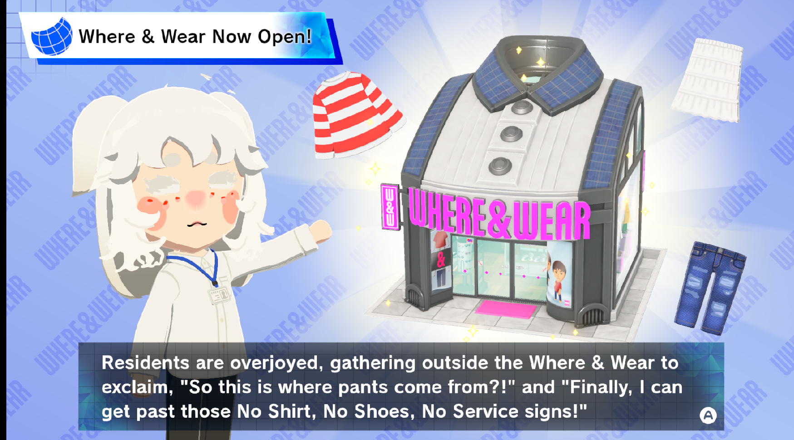
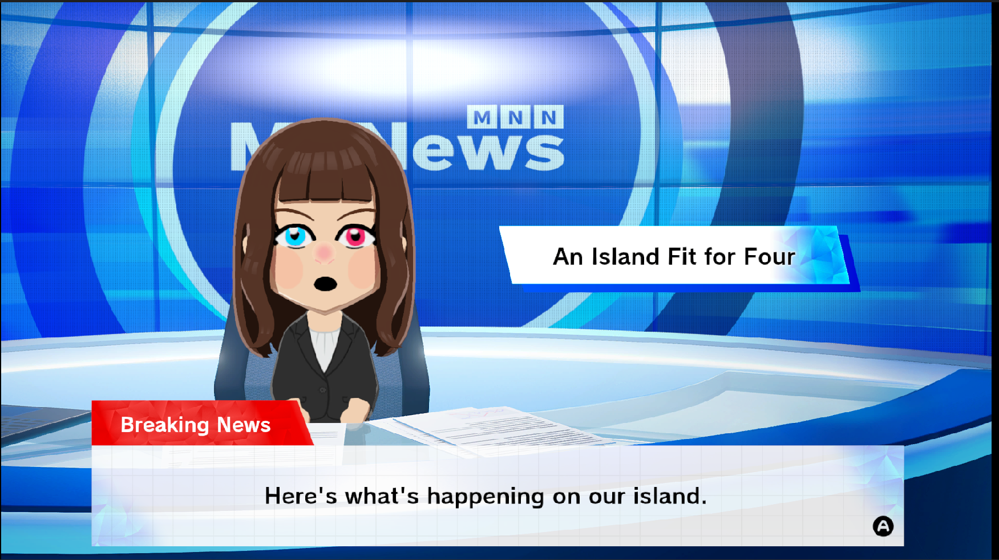
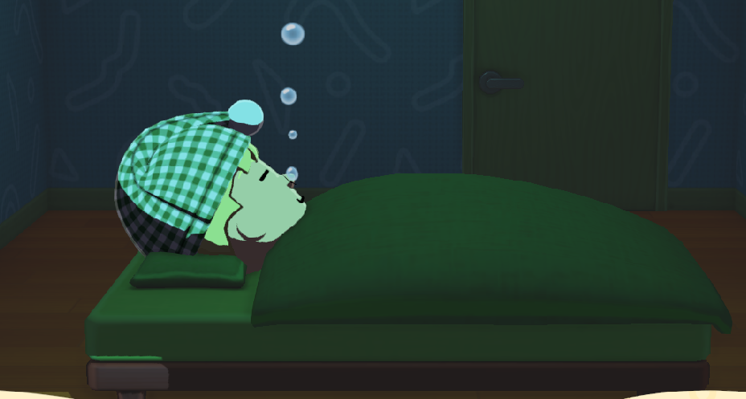
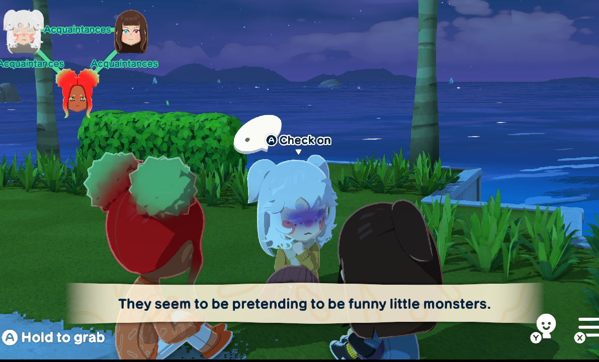
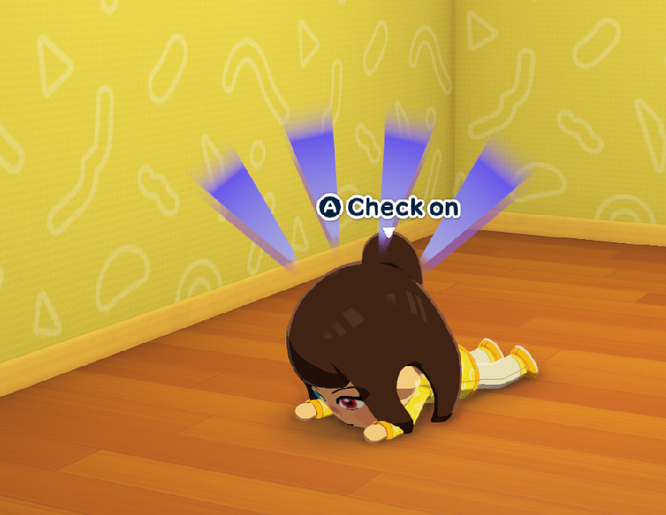
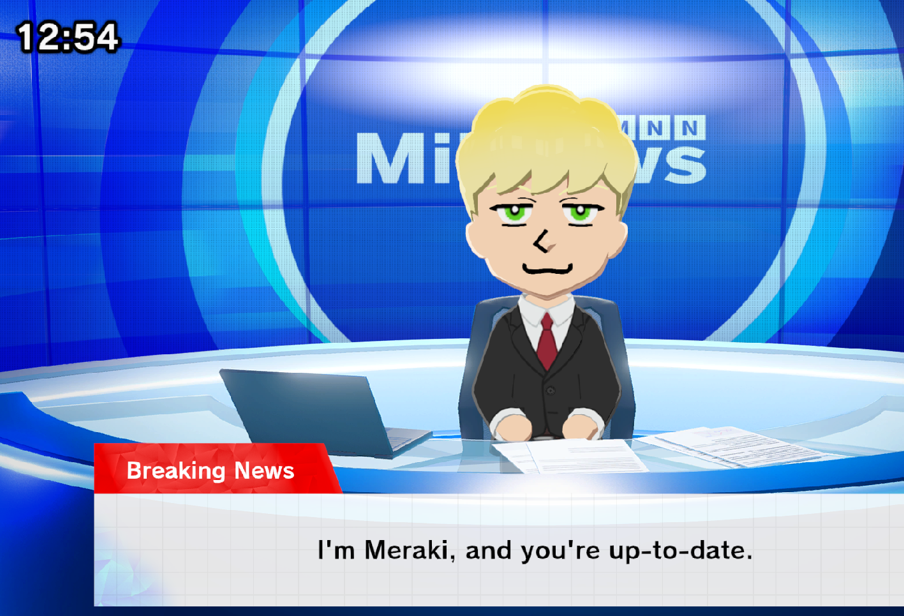
Tenho um video tbmmm KAKAKAK, contexto: sua personagem estava sonhando
DIA4
mann, hj foi cansativo dmais, tive que fazer duas entregas tecnicamente.
fomos na casa do cliente , ele explicou que iriamos deixar algumas
coisas na casa do pai dele, e de la passar na casa deles, enchemos o
caminhao de coisas, armarios pesados escrivaninha e alguns balcoes, indo
pra casa do pai do caba levavlos as coisas com dificuldade ja que sao
mttt pesados, e eu mal comi, cof cff bom, terminando isso colocarmos
coisas do ap pra outra casa... ficou assim da casa fomos pro ap,
descarregamos coisas e carregamos coisas, sorte q n tivemsos que subir
nem descer escada (era o 25 andar...) depois disso fomos pro outro ap
descarregar as primeiras coisas, e almoçamos por la... o caba ficava
fazendo piada com o tanto q eu como, e comprou uma marmita normal pra
mim, mas eu n comi ela toda... acabei fazedno desfeita , terminando o
almoço fomos trazer as uiltima coisass voltamos com um item que n coube
no elevador, voltamos pra casa 1 e fomos no ap do pai dele carregamos as
coisas, fazendo o mesmo trajeto terminamos por vonta de 15h, cheguei em
casa e fui recompensado com 150 dessa vez muhihi, eu dei uma estudada de
leve, tavo mmtt cansado, escrevendo esse texto eu tavo pegando no sono
KKAK espero que esteja tudo bem com vc bê muak, toma algumas fotos e
videos
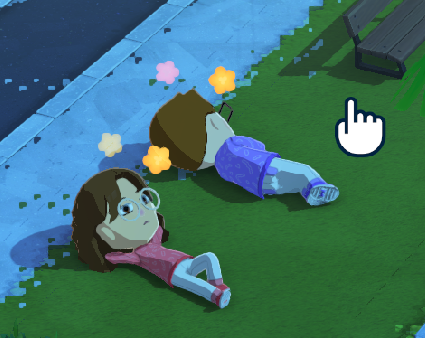
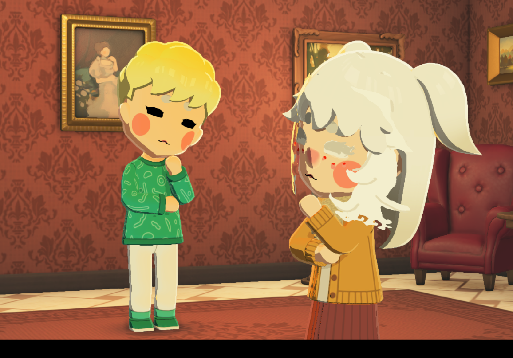
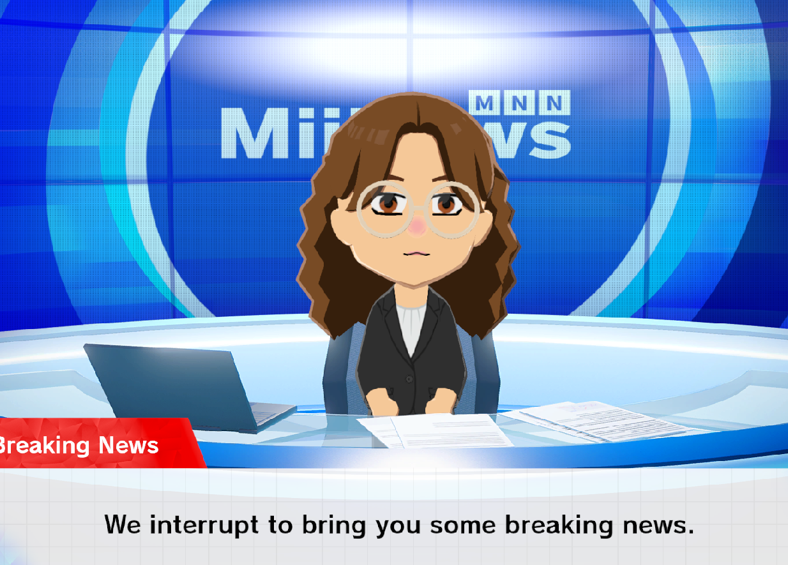
DIA 5
entao, AKAKAK, cof cof,a hj teve trabalho tambem, fomos eu e o cara pra
longe dnv, ja falei sobre uns serviços que tive q subir escada man KAKAK
hoorrivel subir escada, tivemos que voltar la pra montar o negocio que
ia o fogao, microondas e geladeira começamos bem fomos ate q rapido,
ajudei dando as ferramentas, fiz coisas sosinho tbmm, fomos montando
poko a poko, e man, que parede TORTA, a casa eta uma com 2 andares
(terreo e 1), mas man, é o corredor fino dmais pra subir, os predero n
sabia fazer as bixiga direito, n colocaram nem mao francesa na bixiga do
marmore da pia GRRR, terminando o trabalho, eu fui mtt perfect man, ah,
falei com vc de tarde, horario de almoço, HIHIHI, fiquei com vontade de
ir no banheiro varias veses BRUHHH, n tinha agua nos banhero nem papel
higienico, fiquei bueeeeee, depois desses perrenguens, voltamos para
marcenaria, peguei a bike e sai, ja era 18h e eu estavo cansadao, subi
ladeira bueeeee, fui todo desengonsado pra loterica pra depositar um
dindin, ainda todo desengonçado passei vergonha um poko KAKAKAK, quando
cheguei vi minha mae e irmã!! KAKAK tavam voltando da farmacia, acho...
mas eu tavo quase me atrazando pra prova, fui direto em casa, quando
cheguei me arrumei e mandei msg, e fui banhar, peguei umas roupas de pai
AKAKKAK e fui pra facul, cheguei la e tava LOTAAADOO, e eu acabei me
perdendo tbmm KAAKAK HIHI, tive q fazer prova em outra sala pq aquele n
abria, cheguei me marcaram como presente e fui fazer a prova, e me dei
BEMMMM 45/50 MAN IHGHIHIHIIHIHIHI, fiz rapidao, e voltando pra casa fui
ver oq eu tinha errado, quase fui atropelado dnv opsieeee, e depois
disso fiquei tentando fazer o trabalho, mas n consegui pq n me ensinaram
oq tinha q ser feito, amanha começa fisica geral e vai mttt matematica
KAKA, vi o audio q vc fez, vou (ou ja fiz) o relatorio/resumo da sua
musica e vapo: aq umas fotos
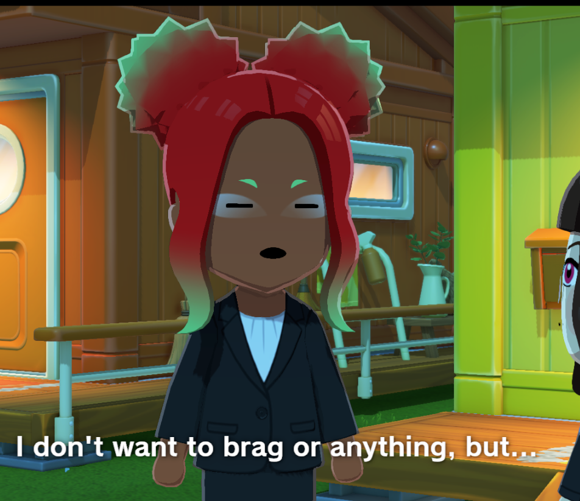
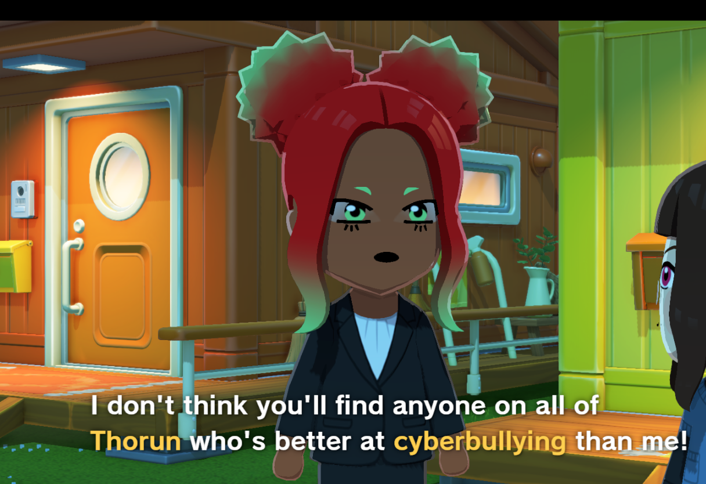
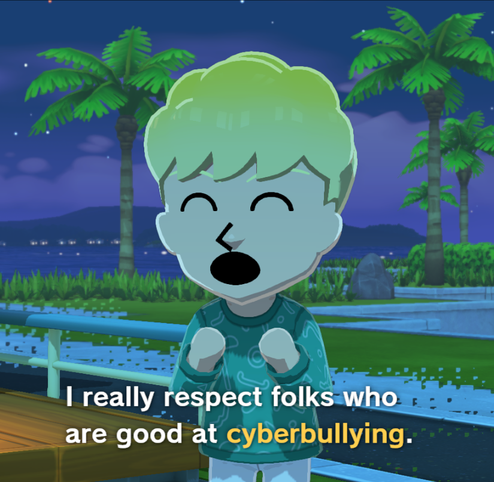
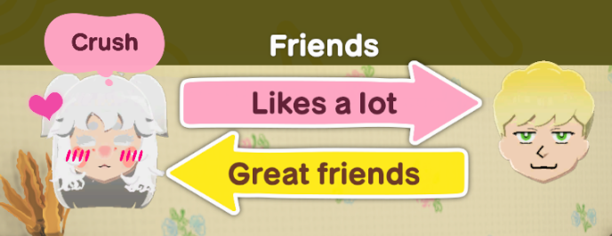
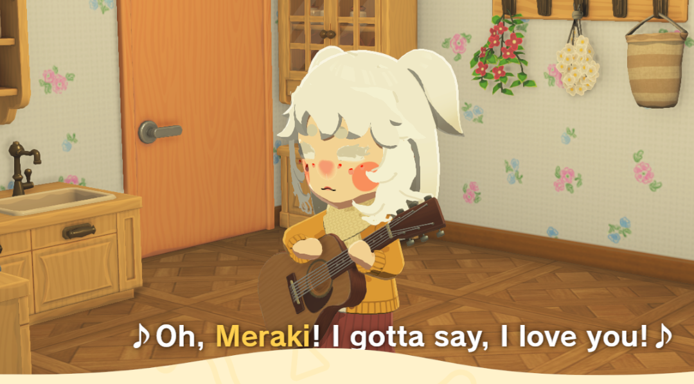
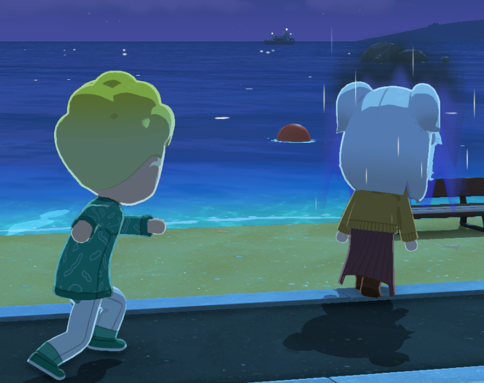
dia6
entao.. eu ja falei como foi nesse dia KAKAK, entao deixarei em
branco
Bom dia, entao hj falamos mttttt cerca de 3h foi bastante divertido!!!!,
mas antes.. eu fiquei estudando e adiantando cosias de fisica, mano!?? o
nivel subiu muito, n sei pq era um exemplo ou sla oq mas mds?? cof cof,
fui terminas umas 17h da tarde , ate que meu pai pergunta se vamos sair
e eu aceito, fomos pra casa da minha tia, foi divertido!!, falamos mTTTT
e eu descobri coisas mtt daoras que MEUS PAIS N FALAM, alguns primos
meus ja tem filho man.. deyum, depois de um tempo mde converça fomos eu
meu pai e o marido da minha tia comprar pizza, andamos de carro um poko
e eles converçaram bastante (o marido da minah tia fala mtt e ele bebeu,
ele fia ate de boa mas acho pq foi poko ele é gente boa!!) ele falou
sobre um cara que tinha usn filhos pequenos e ele foi roubado pelo
mecanico que ele contratou, sei se foi o carro ou peças mas ele meteu um
bolo no caba, bruhh maldade dmais, e o caba era manço mannnw, entrou la
na casa e ficou quietinho converçando com o marido de tia, btw comemos
mttt, minha irma n foi e perdeu tudo MAUAHAH, hmm depois que cheguei
fizemos um aposta ate dia 26, pra ver quem consegue ficar sem falar ate
la, auto controle?? fico um pouc procupado mas aceitei btw KAKAKAKAK
espero que esteja bem!!!
DIA 8
não ouve nada muito WAAAWW, só de madrugada eu resolvi fazer uns
desenhos aleatorios de copia
DIA 9
KAKAK, entao, segunda,hj fui pro trabalho em uma cidade mais longe,
acabei n dormindo taoo cedo e fiquei com sonao quando fomos e quando
viemos de la, fui pra montar um haque e 2 guarda roupas, fizemos
primeiro o haque que foi o mais rapido, depois disso fomos pro guarda
roupa que foi muito mais chato de fazer, o fundo era horrivel de se
colocar NEMMMM, cof cof, btw eu pensei mtt em ti enquanto tavo fazendo
as coias, to começando a sentir falta... como vc ta meu bem?? bueee mt
teeempo slkkk, cahen, acabamos quebrando com o carro a parte de marmore
da garagem, foi mt nooss, mas acabou ralando um pedaço, fizemos isso e
aquilo la e safe, parece que to ganhando 100 reais pela diaria agora em
vez de 70,80, to feliz, parece que eu ganhei um aumento do naada, n
consegui fazer as coisas da faculdade pois ele demorou, tivemos que
fazer mais coisas na regial como anotaçoes de um pedido de uma loja de
materiasi de marcenaria fiquei no carro das 17h ate as 18 ou mais, ja
tava de noite entao acabei pegando no sono dentro do carroKA KAK,
chegando em casa eu fui pago e fiquei zandando ja que ja passou o
horario, bom, pedi pizza e por enquanto to saFeee, TE AMO BE MUAAKKK.w
DIA 10
fiquei estudando normalmente e n houve nada de diferente nesse dia
apenas MAIS UM DESENHOOOOOO , te amo!
DIA 11
mesmas coisas KAKAKA, nenhum desenho BRHHHH NAHH esse dia foi mt
paradasso, fiquei jogando com uns amigos e pedi pro professor ver meu
desenho MHIHIHI ele gostou e me deu só dois avisos, que era sobre a
sombra que a costela faz e o pescoço HIHI fora isso eu tentei treinar
cabeças mas desisti bueeee, talvez eu começe a marcar os dias
normalmente, alias esse foi dia 06/05
te amo bê, SALDADES DMAIISSS SABIXIGA QUE RAIVAAAGRRRR
DIA 12
DIA 07/05
entao... acabei recebendo uma comission KAKAKA de um colega meu E ELE
PAGOOOO, eu pedi 10 ele me deu vinte e eu devolvi dez pq n sou zoeira,
mas veio oto e me deu 30 DO NADA MAN WTf?? AOAAAKAAK aq a imagem:
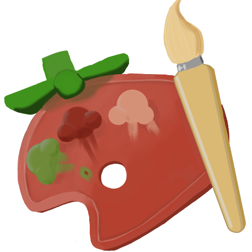
era pra um evento no server do MIKETHE LINK SIMMM DO TAZER E CRAFT MAN
KKKKKKKKKKKKKKKKKKKKKKKKKKKKKK, bom era um desenho simples pra icone
Muhehehe, fiz bunitin. ta sendo mt chato as materias de fisica, acabou
que to me aperriando mttttt, e tenho q fazer alem da de fisica outra de
eletiva?? esqueci, emfim, tenho que completar dois bagaço que eu deveria
ter feito faz teeempo KAKAKAKA, ah acheitaram minhas outras ativiaddes
complementares finalmente slkkkkk , MUAK BE SAUDADESS, AINDA ME AMA??
AMA EU???A AINNDA?? EU TE AMOOO SLKKKKK MUAK
DIA 13
08/05 entao, estudei no avulso as materias de fisica, fiz
uns exercicios mas ta pendendo ainda e vo passar dia 9 estudando dnv,
fiz a mesma rotina, estudei; fui desenhar, joguei, e MANOOOO, fui
chadres co, o LEOOOMKKK SLKK, ficou mttt empatado, e eu acabei ganhando
por tempo man MUAHAHAHAHA KKK fiquei mt pressionado e errei muitas vese
vou treinar mais pra poder fazer as coisas slkkk, cof cof, EU VI VC
ONLINE VIUU TAVA CHERETANDO OQ??, pelomenos espero que tenha pensado em
mim... bue saldades, e eu to voltando a fazer aquelas coisas ruins
dnv... sory.. bom.. te amo viu!! boa noite!!
DIA 14
09/05 Hoje teve coisas diferentes, KKAKAK entao, de tarde
meu pai me chamou pra a gente ir no lago perto da casa de uma amigo dele
MANOOO KAJAKAA, vou mttt gostosin, tava frio e tals ficamos andando e
atravessamos uma pomtezinha, minha mae e irmã foram no mercado comprar
algumas coisas que gente comer, só pra dar um traguinho, ficamos num
parque que tinha do lado, aqueles de exercicios pra veio, NAHHH, teve um
negocio que a pessoa gira, vui tentar usar como barra, nao consegui
subir na altura do peito... acabei ficando encucado com isso, meu fisico
n ta muito bom e to com medo de piorar mais ainda, encuquei muuuito..
acabei pensando de mais e to triste. minha mae gravou um video de eu
brincando com minha irmã la, acabei achando minha estatura horrivel ate
dmais bleh, to horrendo, pretendo n continuar assim mas sempre tiram
sarro das coisas que eu faço e provavel que se eu começar a fazer
exercicios em casa eles iriam, to agoniado com isso.
fomos pra casa do amigo do meu pai, a filha ja velha dele tava
assistindo aquele novo filme do passaro e o esquilo (sla o nome), depois
de um tempo fomoss meu pai e o amigo dele comprar uns salgados, eles
foram converçando no meio do caminho passamos perto da casa da minha
tia, mas resolvemos nao fazer nada. meu pai e o amigo dele ficaram
fazendo piadas envolvendo tadala e as bagaça, achei meio nojento de
certa forma, deu pra entender que era coisa mais sexual, horrivel mas
tive que aturar de certa forma... bleh. de resto foi tipo, vimo o final
do filme, eu fiquei quieto pq n tinha com quem comverçar e meu pai e mae
ficou converçando com o amigo dele e esposa, a filha vai se casas em
breve e ficaram falando sobre a antiga igreja na PB.
queria converçar mais sobre uma coisa que anda acontecendo, n é recente
mas ta voltando com mais frequencia, to me achando meio insuficiente,
tipo, tem coisas basicas que pessoas da minha idade ja ta tendo ou
fazendo/passando, meu pai com minha idade tava trabalhando com um monte
de coisas, ele começou com uns 9 maisomenos, e eu ainda nada,
basicamente só me "relaciono" com pessoas que começaram cedo dmais a
trabalhar, acabo me comparando a eles e pega mt, as veses ate parece que
tao me cobrando KAKA... to começando a ficar chateado tbm, achando q n
vo conseguir, aq é cheiio de gente talentosa e eu to meh. queria ter ido
pro exercito, pelomenos praticaria coisas que iriam ficar pra sempre,
mas n deu, poderia estar aproveitando essa oportunidade pra aprender
algo diferente? poderia, mas n to fazendo nada , n sei oq me falta , n
consigo fazer nada e isso ta me deixando SUUPEr pra baixo, alem das
outras coisas que sempre me cobro, desculpa por perguntar isso, mas pq
vc me amou? é besta e ate triste, eu n consigo entender mt bem o pq vc
me ama... n precisa responder se n quiser sory. te amo! se cuiida!!
DIA 15
10/05 HIHIH, hj foi caotico e meio GRRR, seguinte, de manha
minha mae me chamou pra ir pra casa da minha tia, eu recusei por conta
do relatorio que eu tinha que fazer e tals, e fiquei esperando da a
hora, meus pais foram, e mais tarde eles me mandaram msg falando que ela
tava chamando, avisei que tinha relatorio pra fazer e mandaram meu pai
vir buscar com o carro, levei a bicicleta no portamalas(carro grande
graças a Deus). chegando la comprimentei o pessoal, estavam fazendo
comemoraçao pro dia das maes, parabenisei eles e fui almoçar, (tinha
feito batata frita em casa entao tava um poko cheio), como arroz com
salada russa (aq eu chamo de maionese, mas pra n confundi eu chamo de
salada russa, consiste em batata cozida, maionese, cenoura cozida,
ervilha e milho), depois comi um pouco de bolo que tava dando MUHEHEHE,
deu umas 16h eu resolvi sair e ir para casa, como eu tavo de bicicleta
fui com ela, MAS MAN, TAVA UM FRIO DA GOTA SERENA, pra tu ter uma ideia
agora ta 15°C MAN, eu tavo de shorts e camisa folgada, TAVA FRIIIIOOOO.
chegando em casa eu fui direto fazer o relatorio, era sobre fazer um
experimento em um site, e anotar/calcular as coisas que ele pedia,
primeiro configurei o ambiente e fiz o experimento e tirei as fotos,
tive que fazer com que um carrinho descesse uma base enclinada em 10°
para atravessar num sensor, tinha uma regua nele que marcava uns 18mm
entre cada entervalo, o sensor de movimento e o multicronometro fazia o
calculo dos segundos que ele ia de um ao oto ponto, ai pediu pra eu
criar um grafico mano.. eu criei no papel com uma dificuldade, o pior q
eu teria que saber qual era a parabola e qual era a reta (MRUV E MRU ou
MUV MU [movimento retilineo uniformemente variado, movimento retilineo
uniforme, movimento uniformemente variado etc..]), anotar seus tempos e
periodos, alem de fazer mais 2 graficos, um pra descolamento em relaçao
tempo² e outro por velocidade em relaçao ao tempo, fui fazendo o por
tempo? e o tempo normal, OS DOIS deram uma linha reta, e como eu n
percebi que o tempo mudava drasticamente em um (esqueci qual) acabou
dificultando mais ainda, fiz um fiz oto, e sory, eu n sabia oq fazer
juro e pedi pro chatgpt me encinar e dizer como fazia os bagaço e n
entendi FOI NAADA MANÈ ARGGGG, aida bem q ja passou.. QUE NADA eu vo ter
q fazer a mesma coisa só que om angulaçao de 20° E COMPARAR TUDOO ARGGG
que raiva mano, serio eles esperam que completamos todas as aulas e ja
saimos sabendo de tudo N SOU UMA MAQUINA MAN WTF??????? fiquei das 16e30
mahomenos ate as 21/22h WTF???? fiquei com raiva, ah paguei a facul e
ate agora nada de arrumarem o meu financeiro HUNF
AWNTTTT VC APARECEU DE TARDEZINHA MUDEEEUSS, eu fiquei mt felizzz mas
aquilo n deveria ter contado, vc disse que eu poderia mandar msgg quanto
eu quises que vc n iria vir, HUNFFF, BOCÒ, mas eu aceitei a derrota,
bue, falamos poko mas deu pra perceber o quanto vc ta se esforçando,
entao vo pegar de exemplo novamente pra me manter em pé e firme, vc
falou sobre varias teorias do digital circus, queria comentar sobre a
questao da "lixeira0" oq ele chama de porao na vdd é só um local no qual
ele guarda os corrompidos, se os corrompidos forem feitos pelo caim
entao eles voltaram ao normal??? mas se nao, tem grandes chanses deles
apareceram no filme novamente como inimigos dos protas, todas as coisas
que o caim fez sumiu, mas algumas ainda n. enfimKIKK EU QUERO OUVIR
TODOO TUUUUUDOO oq vc viu esses tempos, eu li um poko antes no seu
arquivo DOC, EU N VI MAIS DEPOIS DESSE DIA OK??? vc falou sobre os tipos
MBTI, eu n vi direito entao n entendi mt bem... eu acho que tenho
algumas discrepancias na minha personalidade, masss a maioria estava
certissima, só espero que n empate no relacionamento, tenho medo de que
algum traço te encomode ou que faça vc ficar alerta, tipo "hmm ele faz
isso, melhor eu ficar de olho", n sei se isso é algo que acontece, mas
eu fico com medo disso, espero que n seja o caso, mas enfim, te amo
muito, e espero que esteja bem, boa noite!!
DIA 16
11/05hmm como posso dizer hj, ta sendo irritantemente
calmo, fiz tarefas, n desenhei e fiquei fazendo o relatorio oq eu achei
mais rapido claro, mas meh chatao, fiz de qualquer jeito memo e fdse
KKKKKKKKK. bom, o caba que me chama pra trabalhar com ele me chamou a
semana toda, pra semana toda, trabalhar la na marcenaria, ajudar a
limar, montar, fazer os bagaço, 80 conto a diaria + almoço, e se der ele
me chama a proxima semana tbmm, vai ser de 8e30 ate as 17h mahomenos,
vou ter q deixar de fazer algumas coisas, ou só fazer a essa hora,
teoricamente seria manha e tarde >trabalho > estudar 3h e de 20h livre,
oq eu vou voltar a focar nos desenho. bom, espero que esteja bem, te amo
muito, e boa noite!!
DIA 17
12/05 HHIHI, hj foi meio caotico man, acordei as 5h me
arrumei e vortei a dormir, de 6h acordei dnv pq eu coloquei uns 5
alarmes KAKAAK, saindo de casa segui pelo mesmo caminho que sempre faço
pra ir, fui tranquilo, chegando la ja botei a mao da massa e fui ajudar
o cara, comessei varrendo a marcenaria e pah depois fui colar umas fitas
na beiras de uns paineis foi meio perrengue pq tive q usar uma pedaço de
madeira pra poder dar o acabamento, normalmente usamos lima ou
ratinho(depois que cortamos a rebarba da fita que foi colada, precisamos
dar um acabamento pra n ficar a fita plana e acabar maxuchando o movel
ou pessoas, raspamos com a lima ou passamos um "molde pronto" que corta
isso, no caso o ratinho), foi chato pq esse pedaço de madeira era
pequeno e tinha q passar varias veses rapidao pra ele ficar mole e
arredondar, n pude fazer com outra coisa pq era amadeirado e se eu
passase a lima ia ficar branco por conta da cola KKKKKKKK, terminando
essas coisas fomos almoçar, tava gostoso slkk, mas como sempre eu sou
meio timido em comer na casa de outras pessoas fiquei quietinho, tinha
poucas pessoas dessa vez UFa mas mesmo asssim me pegou mt BUEE, foi
arroz, feijao preto carne(n sei qual, esqueci KAK) e uma saladinha mttt
boaaa, man tava gostoso, fui descançar e fiquei vendos os reels que vc
repostava, HIHIIH,
terminando eu voltei e tive que fazer eletrica... MAN ARGGGGG ja tinha
feito isso, mas o coiso que tinhamos montado era mt estreito e n passava
os fios e na hora de emendar era horriivell
AAAAAAAAAAAAAAAAAAHHHHHHHHHHGGG, cansava mt o braço cansei mt slk, btw
eu errei mt por alguns motivos tbm, o buraco tava mtt fino , entao a
bagaça m passava, e ele n fez, depois de um looongo tempo, eu consegui
fazer algumas coisas blehh, mas n consegui terminar, o caba teve que
fazer sozinho, deu umas horas de tarde fomos lanchar e tals, na loja da
mae dele, comi um pao salgado, frios??? sla, tava bao e o melhor:
CAPUCCHINOO sla como escrever, eu coloquei mt e coloquei mt açucar tbm,
sabixiga é sem açucar, mtt amargo GRRRR mas noooss como aq tava
gostosinnn MUAK lINDA LINDA cof cof. acabamos la e fomos limpar a
marcenaria e ir pra casa, e nooooss man, cansa mtt, sorte que tava frio,
pq eu fui de casaco e tive q subir ladeira na volta, cansa
mtttttttttttttttttttttt, btw, chegando num ponto n cansa mais e fiquei
só admirando a paisage e tals, mesmo locarl que eu tirei a foto com ceu
vermelho, HIHIHI, bom, indo para casa e passando numa antipa pizzaria
que tinha aqui EU VI UM CARA MTTT PARECIDO COM O MR.BREAN
KLKLLLKKKKKKKKKKKKKKK SLKK eu quase ri mt la.
eu cheguei em casa cansadao slkk, fui tentar tomar banho e minha irmã
tinha acabado de chegar, quando ela saiu eu deixei o discord aberto, eu
n sei se eu falei com vc antes ou depois, MAS MANNN WTFFF tomei banho e
voltei pro pc, MEU PAI TAVA AQ DO NADA, n sei se ele viu suas msg no
disco mas ele tava aqui, e eu fiquei meio preocupado KAKAKAK, MANNNN
WTF? minha mae ficou perguntando sobre olhar meu celular (ela tem
custume de perguntas as veses pra ver se tem coisa errada sla), eu
neguei e ela ficou reclamando (n do jeito ruin, mas como uma crinça
mimada sla "oqq tem aiii, deixa eu veer" "deixa eu baixar um jogo ",
continuei ligando e meu pai ficou rindo) disso meu pai rindo, ele falou
"tem coisa de jovem, foto do pau" EU
QQQQQQQQQQQQQQQQQQQQQQQQQQQQQQQQQQQQQQ, WTF, man, eu sei o como ele tava
e o compotamento e tals, mas se ele tiver vendo minhas coisas eu vo
ficar bravao com ele seriao, ja faz um tempasso que parece que ele
conseve ver (acho ainda mais pelas tentativas que aparecia no youtube
"como granpear watzap "), o mais assustador foi que minha mae mirou logo
no watzap, eu ate tentei mostrar o twitter que ta cheio de garotas
fofinhas de animes e tals, mas ela nem ligou e queria logo o watzap????,
eles sabem de algo man, e se eles n falarem nada e ficarem fussando
minhas coisas eu vou realmente ficar bravo,seriao. fora isso, falei com
vc, e te fiz perguntas mtt idiota, queria falar aq, que eu fiz aquela
pergunta pq ainda n to acustumado com esse tipo de relaçao, fico
procupado o tempo todo com vc, tipo, eu sei que vc n é assim e tals, mas
é algo que tinha medo de falar, tinha medo de que vc esteja com ota
pessoa nesse momento, sim meio idiota eu falar isso depois de tudo que
passamos e tals, entao me desculpe novamente, coisas na internet ta
cheio de "memes" idiotas sobre isso, eu acredito em vc, por isso to
contando, e vou esperar. depois disso fui estudar e ta sendo um assunto
facinho essa semana, leis de newton, força, aceleraçao, gravidade, peso
etc, tavo. esse foi o meu dia, n desenhei, AHH, entao... sobre o not
goon que vc falou.. eu acabei perdendo uns dias atraz... mas ja to
voltando, hj n fiz nadaaa, ta sendo um problema isso, mas sem
preocupaçoes, vo vencer isso. boa noite bê!! SE CUIDA,te amo.
DIA 18
13/05 é... to meio pra baixo e sem motivaçao pra fazer as
coisas, meh, n quero que te afete, continue dando seu melhor!!
entao, meu pai ia me levar junto com minha bicicleta, mas chegou uma
muie estranha aq, toda arrumada e falava bem!!, meu pai tava com ela
falando sobre algumas coisas, como trajetoria: trabalho pessoas com quem
mora, filhos etc, n sabia bem oq era, mas eu me atrazei 10minutos bue...
cheguei la correndo, ah e fui de bicicleta memo, eles iriam demorar,
chegando no trabaio vi que eles conseguiu arrumar a bagaça do led que n
tava entrando, e eu acabei errando mtt hj... teve uma pratileira com led
que tava toda lambusada de cola bonder, feiona e eu fui o culpado, na
hora de colocar os trilhos onde fica o led, entao ele teve que fazer
outra pratileira, ele colocou la e pa e pediu pra eu passar os fios, fui
desatento e cortei o fio que ja tava pronto pra colocar a fita led,
blehh, ele me alertou sobre, e isso pegou tempo da gente, opseee
blehhhhhhhh, fiquei limpando e fitando na coladeira as pratileiras e
fundo do movel, o fundo era removivel entao tive que por um negocio pra
segurar ele senao passava, machuchei o dedo nisso, preensei na hora de
parafusar, bue n vi que uma peça tava lascada tbm, os cara que vinheram
deixar as chapas de mdf n quiseram descer escadas, "ain n foi avisado,
fale com o pessoal da logistica" MAN ERA A COISA MAIS FACIL MAN, eu nem
cansei, e olha que era eles que trabalham com isso HUNF. fiquei fazendo
a organizaçao, ajudei ele a colocar coisas na maquina de cortar, e fomos
almoçar HHIIHI, fizeram coisas boooas, feijao preto, arroz, pureee
temperadooooo YAAAAYY, isso é algo que eu quero comer com vcc, fazer
comida pa nois HIHI, ah eu pensei em um negocio quando tava la, HIIHIH,
"hmm e se eu tivesse trabalhando com algo assim e a Elo aparecesse do
nada com meu almoço e me visse assim??, HIHI que fofoooooo, ela me veria
trabalhando, slkk nice mannnn uiiuiuiii KAKAKKA" ai fiquei pensando
coisas relacionados a vc me ver trabalhando ou fazendo algo masculo
HIHIH.
COF COFF , a comida tava mttt boaaa eu agradeci depois do descanço
muhaha, depois voltamos pro trabaio, hmm digamos que foi tranquilo, me
machuquei com pequenos cortes hj, mao toda machucada e tive que usar
tinner... produto que usamos pra tirar sujeras pesadas como cola, tinta,
etc, e de resto só terminamos as bagaças, ele avisou que amanha vamos
tirar as medidas pra fazer ota coisa la no fim de mundo dnv, a montagem
dos moveis vai ficar pra terça MUHHAHA
OBS: to pouco motivado, e to fazendo poucos desenhos e
tals, n to estudando TAOOOO pesado, talvez por causa do cansaso ta dando
vomtade de fazer dnv, e to evitando isso, sinto saldades de poder falar
com vc novamente... bue, ate da programaçao ta me quebrando, n sinto q
to melhorando, nem to estudando mais programaçao recentemente...
desculpinha, MAS EU ESTOU BEM, e espero muito que vc tambem esteja, fico
vendo seus repost, alguns bem engraçados e outros bem
inspiradores(fooofoo), e vc curtindo eles KAKAKA QUE GRACINHA MUDEUS, bê
eu te amo , falar que nem tu "im fucking love youu" KKKKKKKKKKKK
AGRRRRRRRRR que vontade de te abraçar mano que graça MUAK IIWIWWIIWI
parei cof cof, ah eu fiz uns rabiscos aleatorios e desenhei o bondrewd;
(foi ontem mas okokok)
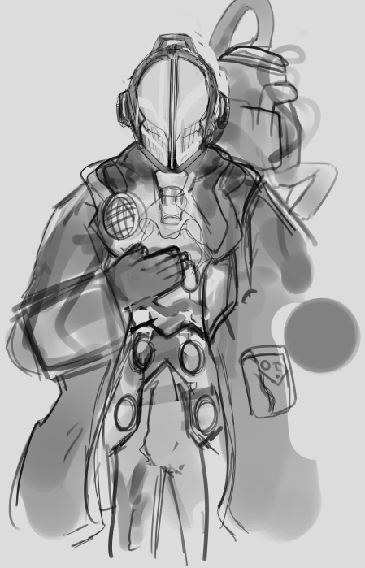
DIA 19
14/05 entao... AKAK, hj fiz o mesmo trajeto de sempre, nada
de mais, entao vo adiantar la pra marcenaria. nesse dia era o ultimo
dia, ja que que ele teve que ir ao medico na sexta, entao as coisas
foram ate que bem!!!, fomos primeiro na casa dos clientes fazer as
mediçoes, um queria um armadio mas queria no lado que tinha uma reta mt
BLEHH , era tipo um trapezio mas sem um dos lados, a area né, terminamos
fomos pra oto cliente, que queria faer um armario pro banheiro tiramo as
medidaas e fomos pra marcenaria fazer o armario pro branheiro, dessa vez
eu fiz AKKAKA HIHIHI, ele cortou as peças e eu fui fitando e montando a
bagaça, começei com as gavetas, eram tranquilinhas entao n me procupei,
depois fui pra base do armario, foi tranquilooo mann, fiquei pensando
sobre coisas aleatorias, n me lembro mais KAKAKKA, AH, antes de acordar
eu to sonhando mais, eu lembro que um desses sonhos eu fui pra uma
fazenda, antigamente nossa familia alugavamos casas perto de praias pra
poder passar o final de semana ou dias festivos, e dessa vez fomos pra
uma fazenda de praia KAKAK, tava tarde e tava tendo por do sol o mais
aleatorio foi o por do sol roxo mano, ficou assim o sonho todo, ai eu
lembro que conheci alguem, me lembrou tu, ficamos jogando cartas,
converçando, nos divertindo nesse dia (ainda por do sol roxo wtf?), ai
lembro que um de nois tinha que sair, n lembro quem, mas do nada vc
entra tipo, num modo criativo KKKKA e fica flutuando, do nada chega mais
gente e parecia que tavam atraz de tu pq cometeu algum crime??, alias, a
nossa aparencia era do gato de botas 1, tem aquela gata malhada, kitty
pata mansa KKKKKKKKKKKKKKKK e eu era o gato de boas, foi mttt locura,
cof cof, fiquei a tarde toda fazendo o armario, a coisa mais aleatoria
que aconteceu foi: tinhamos um botao de touch pra ligar nos led do
nicho, mas n sabiamos que precisava da fonte pra pra conectar na
energia, o "chefe" n sabia oq fazer com 4 fios (era 2 conectado na
entrada e otos na saida de energia) ele embaralhou e conectou 1 de saida
e 1 de entrada e colocou pra textar, pode ser que por conta da falta da
fonte o bagaço explodiu? meh, KKKKKKKKKKKKKKKKKKKKKKKKKKKKKKK man,
desligou ate o djuntor, eu ri ele riu e depois ficou mal KAKKA ele
queria inovar pro cliente, mas depois vimos que precisava da fonte e
ficaria mais caro, blehhh.
e de tarde falei com vc MUAAKK, foi mtttttttttttttttttttttttttt
divertido, amei mtt, HIHI saldades de falar todos os dias, te amo bê.
outra coisa pra falar, eu to meio desmotivadasso nos desenho, acho q
comentei... pretendo dar umas pausas ou ir aos poucos, fazer exercicios
antigos etc, bleh.
DIA 20
16/05 sim... pulei uns dias. e vo dizer sobre hj
(outros dias n houve nada, acho..) bom, fiquei fazendo minhas coisas,
estudei e pah, o mais interessante foi de tarde, que fomos pro shopping
errado pra ver uma reconstruçao da vila do cheves, entao fomos pra outro
shopping por engano KAKKAAKAK, chegamos la e ficamos rodando procurando,
tava lotadasso la entao pensavamos que era aquele mesmo, mas tava tendo
circo do lado de fora, gente dando grau de moto da dentro, e patati
patata pras criança kAKAKAK, btw, ficamos andando ate descobri que n era
o shopping certo, estavamos pensando em voltar para casa, mas teriamos
vindo a toa, entao falei pra andarmos e ficar vendo as coisas, eles
Meh(meu pai, mae e irmã), mas foram tbm KAKA. eu entrei numa magalu pra
ver os eletronicos, celulares e notebok, MAN negocio absurdamente caro
pra um produto peba, namoral, 11k por um celular??? wtf?? namoral??, vi
uns notebooks mt meh, por 3k man... paguei menos de 3k pelo meu pc ao
todo wtf bro, andamos mais um poko, queria ter ido numa loja de roupa
mas n poderia provar, tambem pensie em tirar foto de um conjunto que
tava num manequin , achei uma gracinha slk, mas fiquei com vergonha de
dtirar a foto.. buee, subimos 1 andar e fomos numas americanas, que
tinha oq eu mandei, algumas pelucias e tals, coisa pra casa, e tinhha
umas panelas penduradas q nem ovo de pascoa, eu n podia me levantar
totalmente senao eu batia por conta da altura mandei as fotos pra ti
MUHHEHE, depois fomos pra uma loja de coisa japonesas, entao tava cheio
de trequinhos daora e especificos pra comprar KAKAKA MUHAHAH. depois
voltamos e fomos lanchar, mandei tbm.
te amo viu, bejuuuuu, se cuida bê!!!
DIA 21
21/05 eh... esqueci de atualizar esse site... kAKKAKAA eu
fiquei mtt ocupado, fiquei / to ficando 2 semanas trabalhando e meu
horario ta corrido dmais, bue muita coisa acontecei essas semanas, e a
maioria eu contei pra vc ja KAKAK entao vo só te atualizar de coisas do
trabaio de hj, fomos terminar o cerviço na casa do riquinho, fizemos a
regulagem e a colagem das fitas e alguns acabamentos que fez bastante
sujeira, foi tranquilaaasoo, na saida pensavamos em passar na casa de
oto cliente (dava tempo) Mas esse cliente não estava em casa Teve que
fazer um contorno e tal lá perto da da casa desse cliente tinha
lanchonete que a gente foi enfrentar até que que razoavelmente E tinha
parmegiana , Mano parmegiana!!! a gente foi almoçar lá, que comida
estava boa e fiquei empanturrado. Minha barriga ficou doendo que só a
bixiga e não consegui aguentar. Tive que deixar comida no No prato Tomei
refrigerante e a gente voltou para a marcenaria. Narraçanaria , a gente
terminou de fazer as cortes do dos armários As peças. É o fite E colei
as fita Fiz aquele processo que mandei em vídeo para ti. Fiz há
Varredura da marcenaria . Depois disso, a gente arrumou as ferramentas E
eu fui para casa . Tive que subir uma ladeira bue , Aí voltando para
casa Supunha na làseira lá um cara meio que estava tentando estacionar
do lado direito da rua . Só que , em vez dele ir direto , ele meio que
Veio para o acostamento onde que eu estava e me esperou . Só que quando
eu tentei avançar , ele avançou . E ainda achou ruim , foi algo assim ,
mas foi Culpa minha E voltando pra casa , cheguei aqui , conversei um
pouco com ti , fui estudar . Termine nos estudos , avisei , convenceu um
pouquinho com você E eu descobri uma funcionalidade aqui do Windows que
eu já sabia , Só não estava fazendo uso Que tipo eu falo e ele digita
Isso me ajuda a melhorar minha fala Então eu tenho que falar certo e
pensar do jeito certo para que ele me entenda . Isso me ajude , de certa
forma , mas me atrapalha quando ele não entende , então tem que ficar
corrigindo toda vez . E isso me ajuda muito bem a escrever coisa para TI
, então esse set vai ficar muito melhor . Mesas explicações , talvez
melhore também . Só que aqui fica cheio de ponto , porque toda vez que
eu paro para pensar , ele fica ponto , ponto , ponto . Por enquanto é
isso , eu vou atualizar daqui a pouco . E vou botar mais coisas com o
decorrer dos estudos já é 21 horas e 16 minutos . Então já já vou ter
que ir dormir . Agora novo perder tempo , mas pra poder ficar escrevendo
as coisas .
Acabei de descobrir uma funcionalidade que li Que desabilita as
pontualizações automáticas Então eu posso falar sem que fica colocando
ponto ponto ponto toda hora Tecnicamente eu falei muita coisa e digitei
muita coisa em pouco tempo Isso me ajuda no Tempo que eu tenho e a fazer
as outras coisas e posso. Ainda não pesquisei sobre os olhos Eu estou
com o vídeo aberto mas por algum motivo estou relutante em fazer isso
Tipo não é uma questão de tipo "Ah não quero fazer" Eu apenas tipo no
processo que eu tenho que fazer os desenhos ou pensar em como desenhar
Eu fico recuando um pouco Isso é meio ruim Porque eu acabo pensando
muito e não fazendo nada Então só tem que começar a fazer e é isso que
eu vou fazer agora KK KKK
Então eu desenhei um pouco terminei mais ou menos de fazer a render Do
desenho Ouvê se ia dar aqui pra frente eu consigo me a melhorar um pouco
A questão do olho e do cabelo principalmente do cabelo O vizinho está
ficando bom conseguiu que desenhar um pouquinho fazer a renderzinho
tranquilo Estou feliz Não fiquei jogando um pouquinho até meia-noite e
51 que é o horário que eu estou falando agora Espera que Eu Não brigue
comigo KK Eu não consegui totalmente estudar por causa do horário das
tarefas que tinha que ser realizadas Mas eu acho que ficou bom pelo
menos É o maior vou ter que sair Vou parece ficar o dia inteiro
Trabalhando E ele não tem muitas coisas que eu posso dizer, BEJOO TE
AMOOO GATONA obs : Eu esqueci de comentar e eu acabei cortando o dedo e
parece que foi um pouco fundo É tipo um corte de papel só que versão
madeira Ele rasga Então dói muito E sangrou muito BLEEEHH
DIA 22
22/05
Então é irei falar sobre o que aconteceu dia 22 e meio q eu não gostei
muito porque No finalzinho dele Eu acabei fazendo a cagada De rasgar
fita e não fazer colagem certa Das peças de madeira Então foi chato que
eu fiquei um pouquinho com chateado E tive que consertar aí somou com os
bagaço que eu estava cansado que só a bagaça KAKAK, Hoje eu falei com
você um pouco foi menos que Foi menos Que Os dias anteriores Então não
tive muita coisa para dizer Inicialmente. hoje Dia 22 Eu so cheguei em
casa e fiz as coisas. Mas Durante a Marcenaria a gente Chego na
Marcenaria E como tudo já estava pronto para o dia seguinte a gente só
entrou no carro e fui direto para a casa do cliente A casa do cliente
era cheio de gatos e Eles trabalhavam em frente a fácil entrei em
contato com ele A gente chegou montando a pia E fazendo o corte Da Cuba.
e a gente teve que subir em cima do telhado para desligar o registro
dagua , eu não podia subir Por conta do meu peso Confiquei brincando com
a gata gorda que estava lá . Era o tricolor , se não me engano , é
branco , preto e laranja Tinha um cinza que Tinha medo de mim A cachorra
, que tinha lá , morreu BUEEE FE VELINHAAAA. Enquanto estávamos fazendo
A faxineira Stava limpando e a gente teve que ir almoçar . Na volta que
a gente chegou de volta na casa A mulher tinha limpado o banheiro , que
era onde a gente ia colocar o armáriozinho E meio que não poderia abrir
a água E ela abriu E teve que dar uma limpada e passar de novo o produto
para poder secar . Ela não fez nada de ruim , apenas siga o seu trabalho
, então não tem como a gente reclamar. Cheguei em casa depois de ter
subido bastante ladeira . Eu fui fazer as Tarefas da faculdade E estudar
um pouco da matéria anterior que eu tinha perdido . Amanhã eu vou
terminar de fazer esse estudo e seguir com Atividades Não cheguei a
pensar em nada tão extravagante para poder comentar e nada tão
interessante aconteceu . Cheguei em casa , tomei um longo banho . Eu
fiquei no computador aquecido . ta friu . Botei o lençol em cima de mim
E fiquei estudando . Terminamos os estudos , partir para desenhar um
pouquinho e não consegui fazer as coisas que queria fazer , então só
fiquei jogando por um tempo e respondendo algumas mensagens . Eu estou
escrevendo esse negócio às 2 : 00 da manhã do dia 23 , então . Estou
ferrado AKAKKAAKK
DIA 23
27/05
entao... sei que faz 5 dias que n escrevo nada.. meu motivo foi a
questao do trabalho, e quando eu chegava tinha a facull, bue, MASSS EU
VENHO AQ DIZERR, vou voltar a escrever mais coisas MUHEHEHEH
dureite esses tempos eu só fiquei montando moveis e arrumando a
marcenaria, fiquei preso nela, comi bastante coisa na casa do chefe na
hora de almoço e acabei fazendo cagadas nessa semana, foi bastante
movimentadas, acabei me relaxando na hora de escrever mim sory, e dia 26
COMPLETAMOS 4 MESES YUUUHUUAAAAAAA AKAKAKA, faz 4 messes que estamos
nisso e eu to felizao, ja comentei sobre no seu zap, felizasso cof coff.
nao desenhei essa semana alem do desenho que eu fiz pra vc, e eu fico
felizao por vc ter gostado dele, tavo confiante sobre a luz e sombra
AKAKAK MUAKKKK, planejo continuar estudando desenhos e metodos para
desenhar costantemente, seu aniverçario esta chegando e TOMARA que eu
consiga tempo, se eu n conseguir eu arrumo tempo HUNFF MUAK. vou ver se
acontece algo durante essa quinta e sexta MUAK bejo bê feliz aniverçario
dnv MUEHHIHIHI
talvez n seja uma boa eu encerrar esse capitulo do site assim cof cof
KAKA to ferradassso manoo, sexta tem prova e sabado tbmm e destista! btw
espero que consiga as coisas que vc sempre desejou, te amo meu bem. MUAK